Established by the State Legislature Act XII of 1956
Explore ReportBe globally acknowledged as a distinguished centre of academic excellence.
To prepare a class of proficient scholars and professionals with ingrained human values and commitment to expand the frontiers of knowledge for the advancement of society.
Comprehensive programmes aligned with NEP 2020 for holistic and interdisciplinary learning.
All UG/PG degree programmes (except M.Tech, Pharmacy & Law) in regular education, plus 10 programmes in Distance Education.
61 independent courses and 31 courses with IKS component in regular programmes; 25 independent and 31 IKS courses through distance education.
Available in all UG/PG programmes where allowed by regulatory bodies. Lateral entry in Distance and Online Education with seamless mobility.
NCrF adopted in 140 regular programmes and 6 distance education programmes.
NHEQF adopted in 140 regular programmes and 6 distance education programmes.
Adopted in 140 regular programmes and 6 distance education programmes for effective teaching-learning outcomes.
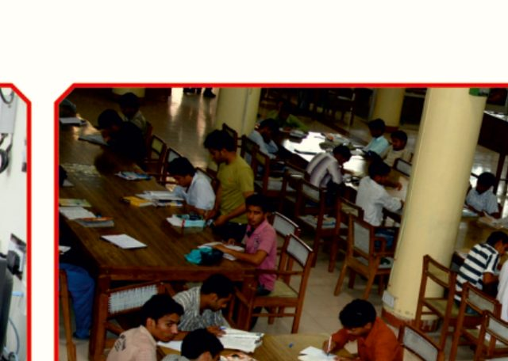
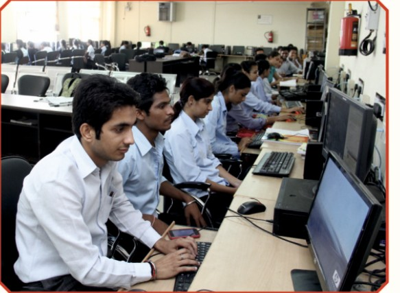
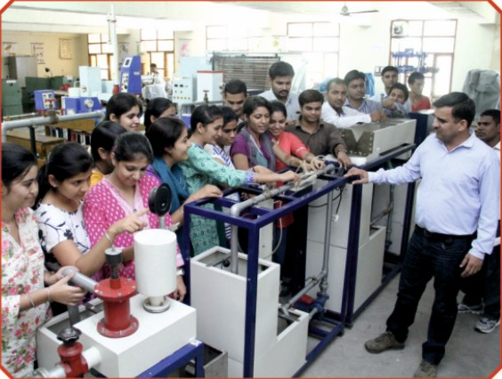
State-of-the-art digital ecosystem powering modern education and administration.
Accessible at kuk.ac.in/lms with department and faculty-wise academic structure, course details, study materials, and examination schemes.
Integrated University Management System since 2021 with 15+ modules including admissions, fee management, hostel, library, examinations, and HR.
Equipped with interactive panels and ICT-enabled teaching software, with plans to upgrade all classrooms.
For academic purposes, with plans to scale to 4,000 desktops to further enhance digital access.
Full campus connectivity with 1 GBPS line capacity, 1 large auditorium (2000 capacity), 5 conference halls, and 48 seminar halls.
With plans to provide laptops to all faculty members (+200 more).
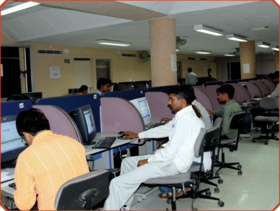
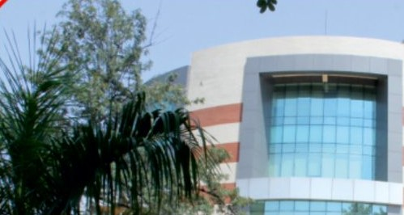
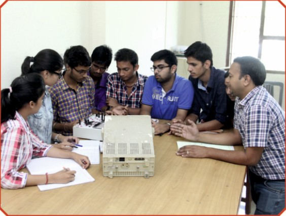
Comprehensive research infrastructure and policies driving innovation and academic output.
Goyal Prizes for young scientists in Applied Sciences, Chemical Sciences, Life Sciences, and Physical Sciences. Research funding up to Rs. 2,00,000 for young faculty.
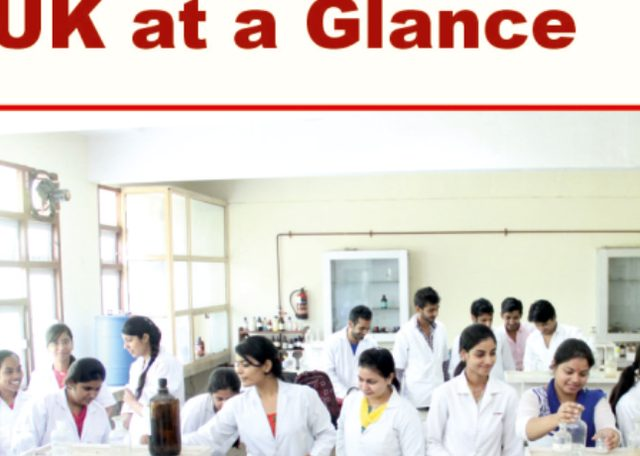
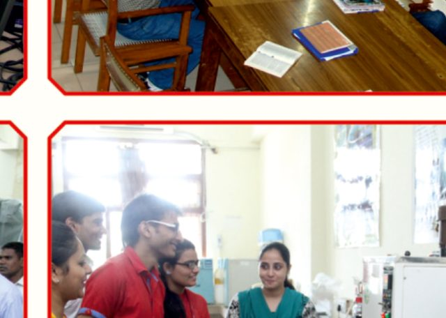
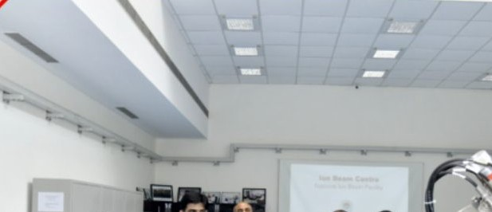
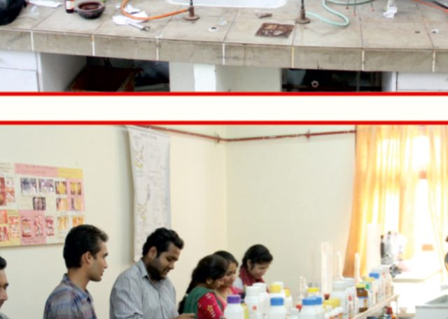
Offered in both UG and PG programmes. Distance Education offers 170 skill-based courses globally.
Corporate Resource Centre, Centre for Continuing Education, Sports, Skill Development, Entrepreneurship, KUTIC, and Community Incubation Centre.
Functional partnerships with institutions and industries for internships, on-the-job training, and project work. View the full list of MoUs (PDF).
B.Com (Professional), BMS (Event Management), BCA (Industry Linked), B.VOC (Medical Lab Technology) with apprenticeship-embedded degrees.
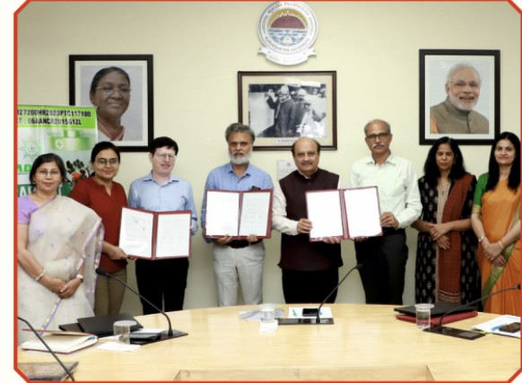
Registered alumni body connecting with industry for expert visits, talks, and alumni meets. KUKAA fund provides endowments and scholarships.
Mandatory in all UG and PG programmes under NEP 2020. Internship policy links industry training with academic credits.
AEDP programmes with two-semester apprenticeship integrated in curriculum. MOU signed with Board of Apprenticeship Training (BOAT).
Centre for Training, Internships and Employment (KUCTIE) organizes campus placements regularly with awareness drives for students and faculty.
Industry partnerships for teaching and mentoring. Distance Education engages industry experts for masterclass MBA sessions.
Faculty consultancy to industry with dedicated policy. Distance Education integrates Capstone projects commencing 2026.
Enrolled in regular programmes with plans to increase through ICSSR and direct admissions.
In distance education programmes from across the globe.
Partnerships with universities from US and Asia for academic and research collaboration. Plans for Joint and Dual Degrees.
Targeting QS Asia ranking of 450-500 and preparing for QS World ranking in next 10 years.
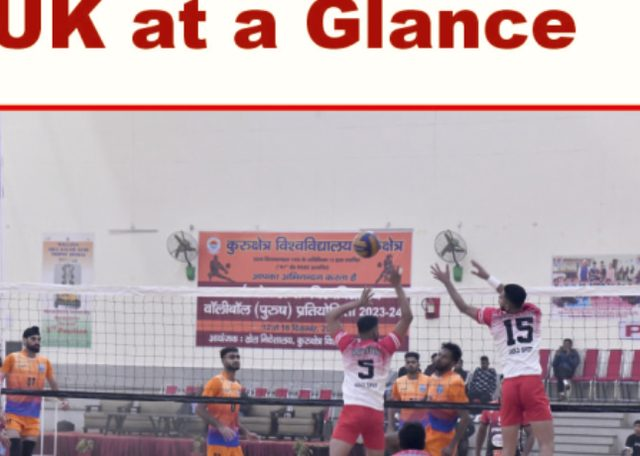
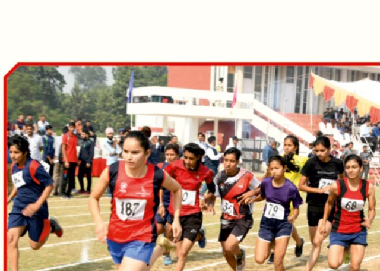
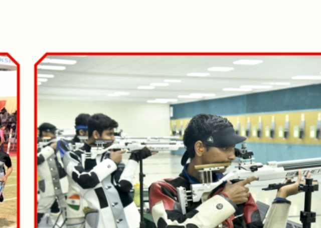
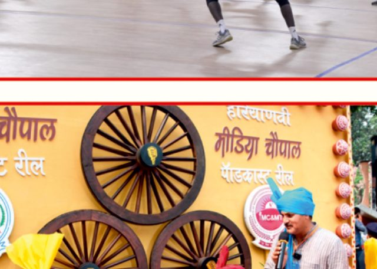
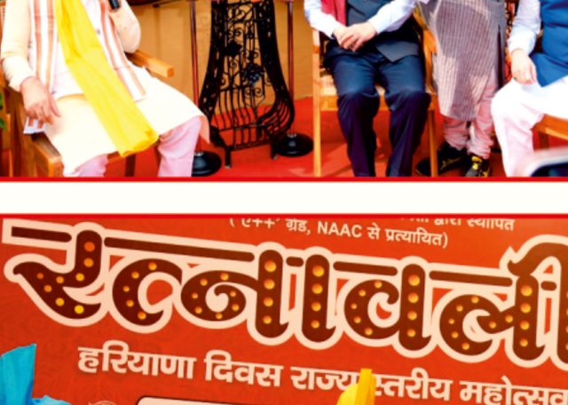
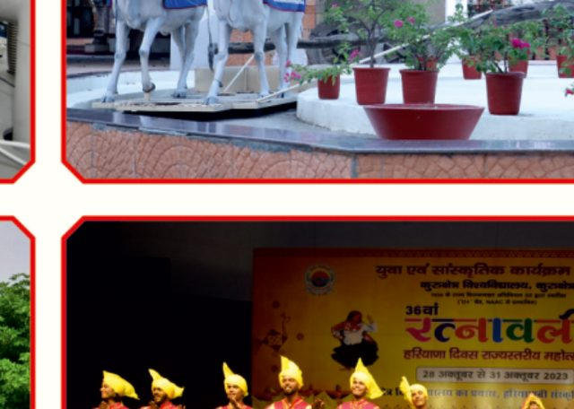
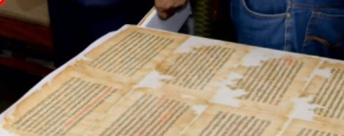
13 Girls hostels for 3,290 students, dedicated healthcare, psychologists, bus service, ICCASH committee, Women in STEM (WIS) forum, and WSRC established in 1989.
No discrimination in admissions, recruitment, or promotions. Reserved seat for "Single Girl Child" in all programmes.
Equal Opportunity Cell, zero-fee admissions with state scholarships, MGAIS coaching centre, Dr. B.R. Ambedkar Study Centre for free coaching and skill development.
Accessible website, assistive library devices, ramps in all buildings, wheelchairs, hearing aids, E-carts for campus transport, scribes for exams, and special education programmes.
Facility for young children available on campus - one of fifteen model creches in Haryana. 6-month maternity leave and 2-year child care leave for female staff.
Honouring individuals working for social harmony, welfare of the downtrodden, and environmental issues. Rs. 2 lakh cash, medal, and citation.
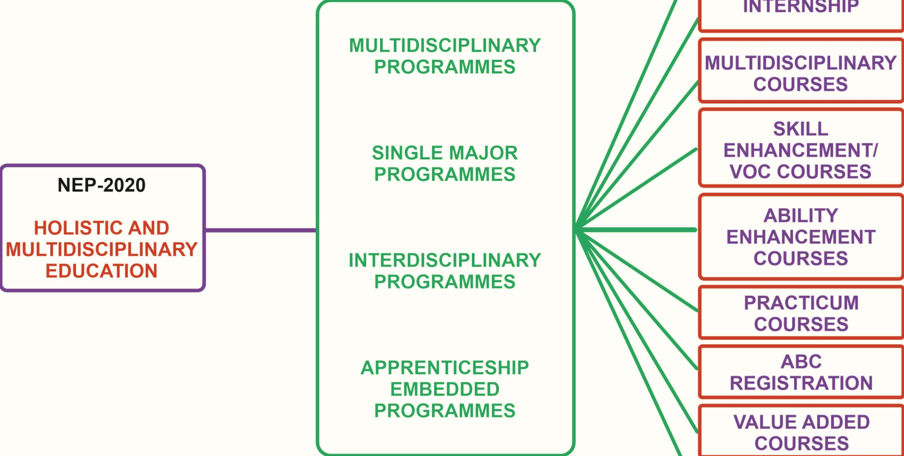
IDP 2025 is active with medium-term (7 years) and long-term (8-15 years) goals planned and documented.
Adopted for all UG and PG classes under NEP-2020. Moving towards participative evaluation and away from memory-based examinations.
Available in MDC, SEC, VAC, VOC, OEC, and discipline-specific electives. SWAYAM portal integration for choice-based learning.
Sports, cultural events, 7 activity clubs, NSS, NCC, mental health awareness, Centre of Happiness, and Dharohar Museum for cultural heritage.
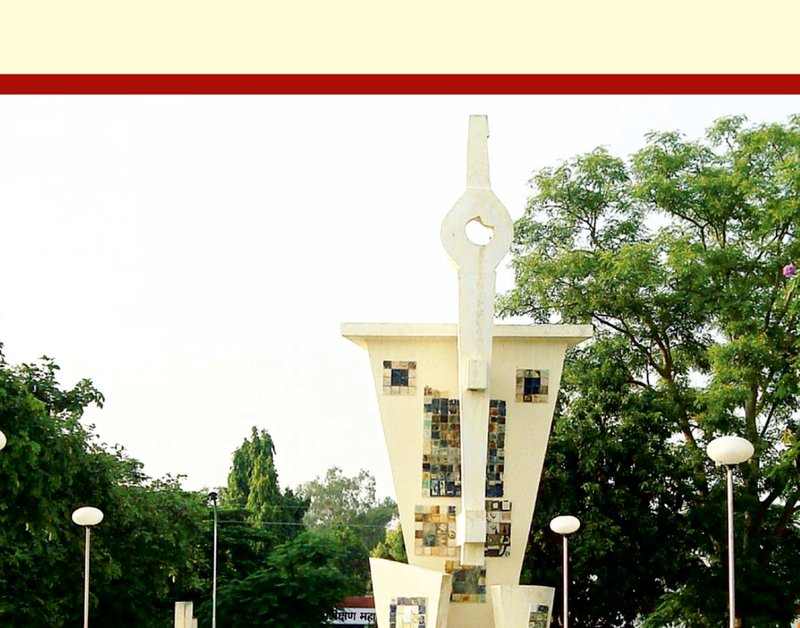